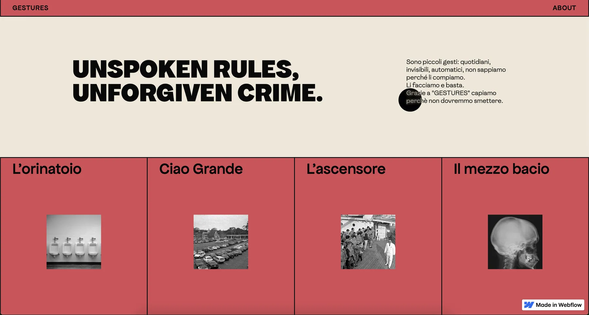
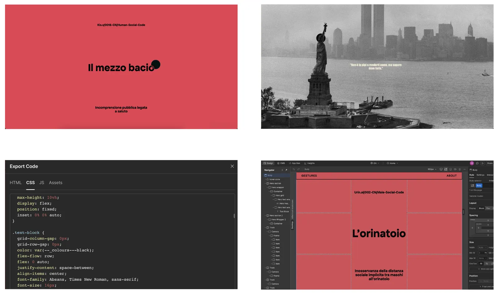

Gestures
Nato quasi per gioco, Gestures è un progetto di web design che esplora con ironia le “leggi non scritte” della società: quei comportamenti taciti e universali, come il non sapere dove guardare in ascensore per evitare il contatto visivo con uno sconosciuto.
Born almost as a game, Gestures is a web design project that ironically explores society’s “unwritten rules”: those tacit, universal behaviors, like not knowing where to look in an elevator to avoid eye contact with a stranger.
Il tema è affrontato attraverso un espediente narrativo inaspettato: una cornice fittizia in stile giallo poliziesco, in cui l’utente è chiamato a “indagare” sulle dinamiche sociali.
The theme is approached through an unexpected narrative device: a fictional detective-story frame in which users are called on to “investigate” social dynamics.
Sviluppato interamente su un’unica landing page, il sito detta il ritmo del racconto giocando con la navigazione. L’interfaccia alterna infatti in modo fluido sezioni a scroll verticale e orizzontale, creando un’esperienza dinamica che accompagna la lettura e trasforma un semplice insight quotidiano in un’interazione divertente e memorabile.
Built entirely on a single landing page, the site sets the pace of the story by playing with navigation. The interface smoothly alternates vertical and horizontal scrolling sections, creating a dynamic experience that accompanies the reading and turns a simple everyday insight into a fun, memorable interaction.


Gestures
Web designWeb design
2025
Progetto personalePersonal project
Progetto individualeSolo project
- CodingCoding
- User interfaceUser interface
- FotoritoccoPhoto editing